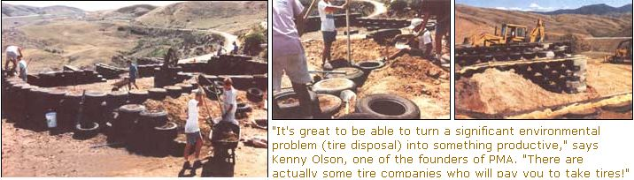

Tirehouse Ii
A small development company is inspired after reading about Michael Reynolds' "earthships."
By Tim Rhodes
February/March 1993
"It's one thing to read about it in a magazine or see it on TV, but when people see it in their own state, with someone they know, they start to pay attention. We're hoping they think, `I could live in one of these,"' says Sheryl Logan. A founder of Positive Mental Attitude (PMA) of Idaho, a small construction and land-development company, she is referring to Solar Summit-a new and totally solar-powered subdivision with super-efficient construction.
The idea for the first home came from a Mother Earth News article by Michael Reynolds, a New Mexican architect who designed and built the "earthship:' (See Mass Appeal.) Reynolds' construction design is based on the theory that the denser that matter is, the more stored energy it can hold; the denser the walls of a house are, the better able they are to retain temperature. Reynolds' concentrated walls of dirt-packed tires and aluminum cans are so dense they act as the home's primary cooling and heating source.
Kenny Olson, another one of PMA's founders, read the article and was intrigued. He and his company had been looking for a way to reduce waste and improve the quality of life in building, business, and life in general. Olson thought the earthship was a great idea because there are literally millions of tires out there, taking up space and polluting the environment. "It's a great thing to be able to turn such a significant environmental problem into something productive. There has to be more of this kind of recycling. There are actually some tire companies who will pay you to take tires!"
So he took the idea to his two partners, J. Scott Fenwick and Sheryl Logan, and together they came up with a plan to develop their own solar-powered firehouse. However, when they found 110 acres of gently sloping ground north of Boise, Idaho, the plan of building one solar-powered firehouse grew into a goal of developing an entire solar subdivision with 14 lots. Although this land had been plotted as a subdivision 12 years before, nothing had been done with it because of the cost of bringing in a traditional power supply was too high. "This is a wonderful example of having a vision for something that appears useless," Fenwick says. "Nobody thought this land would ever be developed because `normal' power is just too expensive out here:'
The Solar-Powered Home
Solar Summit's first home-similar to Reynolds earthship design-is a 2,500-square-foot adobe-style house cut into Idaho hillside. It's a split-level, with two floors made of stone, eight-foot ceilings, two bedrooms, and a metal roof. There are 30 windows (seven are operable) that slant to the south, deflecting the hot sun in the summer and soaking up the sun's low-angled rays in winter. As for the walls, they are made of 1,000 tires, each stuffed with over 300 pounds of dirt. Aluminum cans are stuck between the tires, and adobe or stucco covers the tires for a smooth finish. (It's hard to get much denser than this.)
As of November, five lots had been sold. What types of people are looking to move into this subdivision? According to Olson, who is also the development coordinator for the project, the average home builder is concerned with today's skyrocketing building-material costs, higher and higher energy costs, and concern for the environment. People want energy-efficient homes to keep these costs down, and are beginning to look for alternative building techniques:'
Local Boise resident Mary Reed agrees. She saw the earthship concept on TV about a year ago, and then saw a local news article on the subdivision this past summer. After seeing actor Dennis Weaver's finished firehouse on video, Mary was convinced that the concept is viable; she is considering building a house early next year with PMA's help. She likes the obvious heating and cooling advantages implicit in the design, as well as the idea of recycling tires. "Anything that can help reduce this ongoing environmental disaster is important," Mary says. "But the most important thing about this type of house is its warm and secure feeling; it is very livable and has a lot of flexibility in design and function:"
Ken Kroll, another interested homebuilder, says that the flexibility in the firehouse's design is absolutely crucial. "Being able to incorporate personal needs and desires into your own structure is what life is all about:"
Unexpected Resources Help Out
A big boost for the company's development efforts came when Idaho's major electrical utility Idaho Power, jumped on board. "It's the last place you might think to look for help on a solar project;" states Olson. "But it proves that even the most traditional entities are realizing that change has to occur soon:' The utility has designed and will maintain, for three years, a solar-powered, photovoltaic energy system to provide for the home's electrical needs.
Engineer John Wennstrom, of Idaho Power's Energy Division, reinforces PMA's goal: "Idaho Power is committed to Solar Summit as a research project. The Public Utilities Commission has encouraged us to be more active in solar, and PMA's projects have helped provide incentives for us to file a tariff with the commission, which they've approved. Our commitment can now be expanded to helping anyone who is living or wants to live off the grid:" People in remote areas can now look to an established entity to help them harness power for their homes and cabins.
Searching for Solutions
The super insulation and mass of the tire house sparked another thought for PMA. As Logan tells it, "The houses we are building today are dinosaurs. There isn't a good reason why we aren't building better homes, so we started looking for other super-insulated home plans that would work for our subdivision. We have found several different kinds, from Styrofoam to stray, but we had to look hard in many different places to find them. The problem is that the consumer isn't aware of everything available, and it is frustrating when you can't find one place that a person can call to get a list of names and phone numbers of alternative-housing companies:'
But PMA was lucky enough to find a small, newly founded company located right in Idaho, a clearing house to research and find this type of information. The company Alternatives Inc., uses a variety of methods including computer database searches and the development of an alternative-materials library. The company's goal is to maintain and track information about alternative construction methods and materials. The company hopes these methods will be a good way to show people just how many choice, they have when considering construction alternatives.
Last Efforts
Although PMA is excited about its solar-powered subdivision, there is still work to be done. "We have people thinking the tire house will be more like a cave than a house," states Olson. "Getting people to change their ways of thinking can sometimes be the most frustrating aspect of our project:"
Raised Eyebrows
The public isn't the only one who has to be convinced. PMA has been forced to work within the confines of traditional banking rules in an effort to finance their dream. It was difficult to find financing for the land because it is not connected to the power grid. According to Fenwick, the banks raise their eyebrows because of the nature of the house. Olson adds, "We are trying to make them understand that we want to make normal better. We have to. Our planet won't survive what has become `normal,' so we do what we have always done when we believe in a project-keep going until someone listens:' The fate of the loan lies in the hands of the loan committee, and PMA hopes that banking attitudes change towards the use of alternative building materials and techniques.
Chins Up
Although PMA of Idaho expects more hurdles, Fenwick looks toward the future with anticipation. "We want to see this kind of action in every town. We want to learn all we can about different types of alternative housing, and help people build homes for themselves. Our goal is to work with other builders of super-insulated, environmentally responsible homes in an effort to bring these ideas to everyone, including low-income and third-world familes." In the meantime, he encourages those who are starting new businesses to keep their chin up and continue moving forward ....
Bionote: Tim Rhodes is a member of MOTHER'S Reader Editorial Board. His interests in alternative energy are deep-rooted with 18 years of personal experience in solar, wind, and water projects. He hopes to have his own tire-house-building plans approved soon, and he is getting ready to start building his home as soon as the weather breaks this spring.
PMA of Idaho
By Kim Jones
Housed in a converted garage in the north end of Idaho's capital is a small construction and development company with dreams big enough to house the world.
The company, PMA of Idaho, is one that was really pulled up by its bootstraps. Partners Sheryl Logan, J. Scott Fenwick, and Kenny Olson started with a few hundred dollars, some credit cards, and a lot of positive thinking. The trio began by purchasing older run-down homes (which nobody else seemed to want) and finding new creative possibilities. They did the remodeling themselves, and then rented some and sold others for profit. But when the real-estate market changed in Boise, older homes were no longer available at competitive prices, and that forced the founders to move into construction and property development. The idea of the solar subdivision was born.
Says Logan, "The biggest hurdle in the remodeling/new-building game or any small business for that matter, is finding lenders who are willing to cooperate with your building plans. Having the banks tell us `no' just made us more determined to find an answer." So the company asked family, friends, and outside investors to participate in their development projects. Sometimes they used finance companies who specialized in high return and little risk.
This determination, coupled with the group's growing concern for the planet, led to PMA's most recent quest to create energy efficient and friendly homes. As Kenny Olson put it, "The amount of waste that occurs each day in our collective lives-feeding our need for energy and for what we consume-is appalling. If we don't do something soon, our kids won't have anything left. We must learn to reduce, reuse, and recycle:'
|
 ""A tirehouse is warn and secure; it is very livable and flexible,"" says local Boise resident Mary Reed.Sheer mass is the primary heater and coolant. Each home is constructed from 1,000; each tire is stuffed with over 300 pounds of dirt. |
 |
|